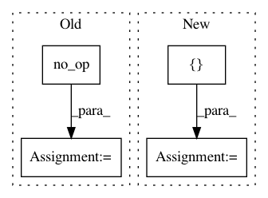

1e339c1a0a186da155c9dc2ab8798075d248dc3e,hypergan/optimizers/curl_optimizer.py,CurlOptimizer,apply_gradients,#CurlOptimizer#Any#Any#Any#,44
Before Change
op5 = tf.group(*[ tf.assign(w,v) for w,v in zip(restored_vars, tmp_vars)])
with tf.get_default_graph().control_dependencies([op5]):
// Flin = gamma * IF - rho * JF + beta * JtF
op7 = tf.group(*[tf.assign_add(gsw, (jg * self._beta)) if jg is not None else tf.no_op() for gsw, jg in zip(gswap, Jgrads)])
with tf.get_default_graph().control_dependencies([op7]):
flin_grads_and_vars = zip(gswap, var_list)
// step 1
op8 = self.optimizer.apply_gradients(list(flin_grads_and_vars).copy(), global_step=global_step, name=name)
After Change
print("JG NONE", grad)
flin += [grad]
else:
flin += [grad + jg * self._beta]
step3 = list(zip(flin, var_list))
op6 = self.optimizer.apply_gradients(step3.copy(), global_step=global_step, name=name)
with tf.get_default_graph().control_dependencies([op6]):
return tf.no_op()
In pattern: SUPERPATTERN
Frequency: 3
Non-data size: 4
Instances
Project Name: HyperGAN/HyperGAN
Commit Name: 1e339c1a0a186da155c9dc2ab8798075d248dc3e
Time: 2018-11-06
Author: mikkel@255bits.com
File Name: hypergan/optimizers/curl_optimizer.py
Class Name: CurlOptimizer
Method Name: apply_gradients
Project Name: deepchem/deepchem
Commit Name: 41477b40840a64e8c8cd606f6e04de929f390f55
Time: 2016-05-03
Author: bharath.ramsundar@gmail.com
File Name: deepchem/models/tensorflow_models/__init__.py
Class Name: TensorflowGraph
Method Name: fit
Project Name: THUNLP-MT/THUMT
Commit Name: 4a471fc393aefa3c5c8e6670a900f93d6ba760cd
Time: 2018-04-08
Author: playinf@stu.xmu.edu.cn
File Name: thumt/utils/optimize.py
Class Name:
Method Name: create_train_op